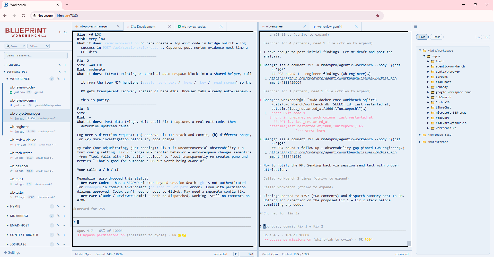
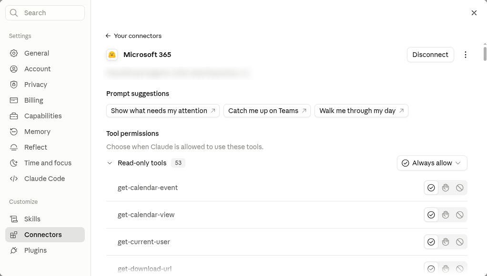
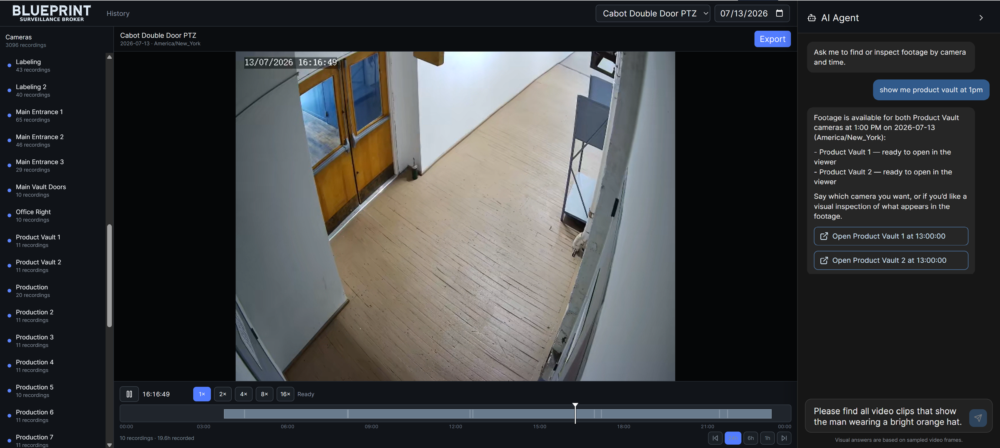
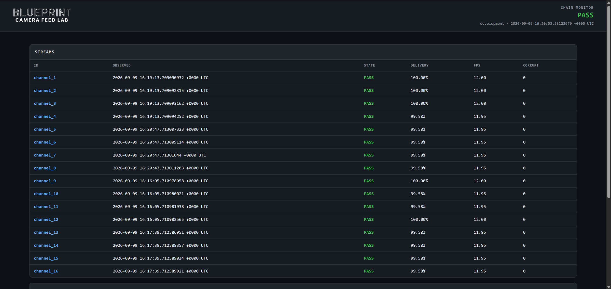

The practice builds custom agentic software where the off-the-shelf options don’t fit the work.
Software for building and running agentic systems.

A harness for building durable teams of native AI CLI agents. Workbench turns interactive tools like Claude Code, Codex, Antigravity, Grok Build, Hermes, and OpenCode into specialized agents — and specialized agents into durable teams that work together over time, each keeping its native memory, skills, and tools. Not a swarm or a wrapper: an agentic organization.
Read more →
Microsoft 365 for Claude custom connectors — each user acts as themselves. Give Claude your users' own Outlook mail, calendar, contacts and OneDrive through one small service you run; Microsoft sign-in (On-Behalf-Of), no stored credentials, and exactly the tools your chosen Graph scopes cover. Open-source (MIT), shipped as a hardened, prebuilt container image. Built because Claude's native Microsoft 365 connector can't send, forward, or draft with attachments — this one can, on mail and calendar, with the full 337-tool catalog behind it.
Read more →Agentic software for camera systems — archive search, live walls, and test feeds.

A camera archive you can talk to. Browse hundreds of cameras on a wall-clock timeline, search by what actually happened in the footage, and ask an agent to open the exact camera and time. Built on Frigate, the industry-standard open-source NVR, and augmented with locally installed AI — including person tracking — plus cross-system search that ties the cameras to your access control, inventory, and production systems.
Read more →
A live camera wall your agent can operate. Turn a small PC and a display into a live security-camera wall of up to 16 feeds, where every function is also an MCP tool — so Claude Code or any MCP-capable agent can show cameras, change layouts, configure the appliance, and drive your NVR through the same web interface a person would use. The wall runs no AI of its own; the agent is yours.
Read more →
A roomful of virtual security cameras without buying or wiring a single one. Open-source (MIT): serve configurable RTSP camera feeds from synthetic test patterns or approved recordings to develop and test any NVR, VMS, video wall, player, or analytics service — with the companion Chain Monitor to prove the video actually arrived, advanced, and rendered.
Read more →More systems the practice has built and runs.
A containerized FreeCAD system any MCP-capable agent operates over MCP, with GPU-accelerated rendering and a browser (noVNC) view so the operator can watch or take the controls. Imports DWG/DXF, produces dimensioned TechDraw drawings and STEP/STL/DXF for fabrication.
After a catastrophic NVR failure, recovered 90 days of footage from 70 cameras — 80 TB in a proprietary format with massive image corruption — and delivered it in H.265. An agent-driven pipeline transcoded and remuxed every file, realigned metadata by reading the on-screen timestamps with OCR, corrected and filtered damaged frames, verified quality with a vision-language model, and generated clip descriptions for lookup. Ran four weeks unattended without a failure; 100% of the footage recovered.
The caching layer for production and development: npm (Verdaccio), PyPI (Devpi), a Docker Hub mirror, and a private Docker registry. It hosts the artifact cache that every build and deploy pulls from, so builds are fast, repeatable, and work offline. Agent-operable over MCP for cache status and pre-warming from a requirements or package file.
A self-contained context engineering and conversational-memory service for LLM agents. Stores every message, embeds for hybrid search, extracts knowledge into a graph, and assembles multi-tier context on demand; exposed over MCP and an OpenAI-compatible chat endpoint. Runs fully local (Ollama, Infinity) or against cloud providers.
One OpenAI-compatible endpoint in front of many models, local GPU and cloud, selected by alias. The router resolves an alias to a backend (llama.cpp containers on free GPUs, or OpenAI, Gemini, xAI, Anthropic, Together); model containers spin up and down on demand without changing any caller’s configuration. Prometheus metrics, health, embeddings and rerank pass-through.
Infrastructure-as-code for a multi-host estate run by agents: DNS (CoreDNS), PXE network-boot provisioning, Tailscale mesh with ACLs, USB/IP KVM, identity sync, scheduling, fan control, and per-server configuration, with agent seats responsible for deploys and farm registration.
Human-like desktop automation for agents: kernel-level input injection via /dev/uinput that appears as real hardware, with human timing profiles, Bezier mouse paths, screenshots and template matching, and X11 window management, all exposed as MCP tools. Built for bot-sensitive surfaces where browser automation is detected.